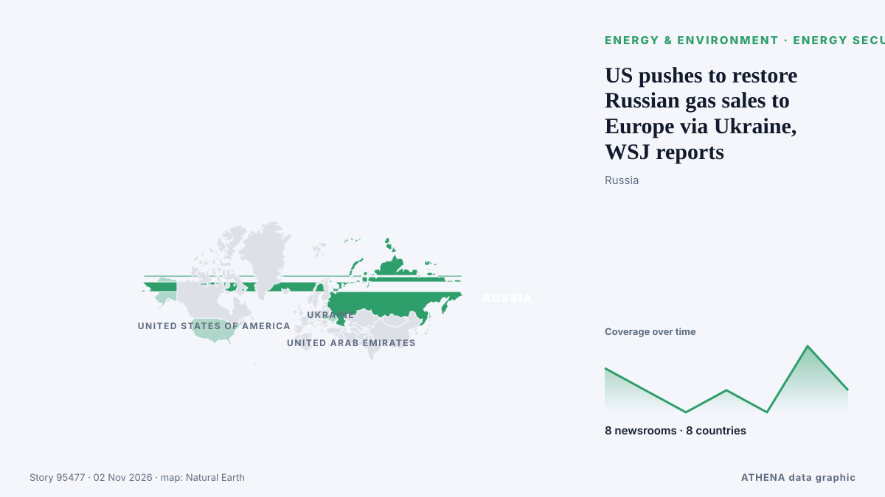

الطاقة والموارد والبيئة
تُعرض العناوين بالإنجليزية كما نُشرت.

أمن الطاقةUS pushes to restore Russian gas sales to Europe via Ukraine, WSJ reports
The United States is backing a rapid resumption of Russian natural gas exports to Europe via pipelines crossing Ukraine as part of talks aimed at securing an energy ceasefire before… من Arab News
| 20 أكتوبر | 25 |
|---|---|
| 21 أكتوبر | 57 |
| 22 أكتوبر | 84 |
| 23 أكتوبر | 65 |
| 24 أكتوبر | 38 |
| 25 أكتوبر | 69 |
| 26 أكتوبر | 79 |
| 27 أكتوبر | 113 |
| 28 أكتوبر | 88 |
| 29 أكتوبر | 73 |
| 30 أكتوبر | 86 |
| 31 أكتوبر | 33 |
| 1 نوفمبر | 39 |
| 2 نوفمبر | 13 |
India evacuates thousands ahead of second cyclone in a week
Authorities began evacuating people along India's eastern coast on Monday, a day before a severe cyclonic storm is expected to make landfall in a region recovering from a deadly... من Oman Observer
Chennai school holiday update, weather IMD alert: Severe cyclonic storm Murasu latest news - Details
Schools and colleges in Chennai are closed today, Monday, November 2, due to heavy rainfall and a precautionary holiday declared for Cyclone Murasu. من Livemint
Nigeria: APC, Atiku Differ Over Tinubu's Electricity Promise
[Leadership] The All Progressives Congress (APC) and former Vice President Atiku Abubakar have clashed over President Bola Tinubu's 2023 campaign promise on electricity, with the ruling party… من AllAfrica
UAE condemns attack on Qatar’s LNG carrier in Gulf
Qatar Gas Transport Company says no crew members injured, vessel remains safe and operational following Friday evening incident. من Anadolu Agency (English)
Winds of change: Laos looks up for renewables push
Hydroelectric dams have proliferated across Southeast Asia in recent years but experts say wind energy is now set to take off. من CNA (Channel NewsAsia)
Oil prices decline on global markets
The financial performance of the sector is driven by global prices, coal export volumes and fluctuations in the ruble exchange rate, Dmitry Islamov said. من TASS (English)
Allied Gold begins wet commissioning at Kurmuk mine
Allied Gold has begun wet commissioning at its Kurmuk Mine in Ethiopia and expects to introduce ore into the processing circuit this week. من Mining Technology
ActionAid Warns Debt Crisis Is Undermining Africa’s Climate Action
The reports warn that rising sovereign debt and the continued reliance on loans rather than grants for climate financing are worsening the financial constraints facing developing countries. من Capital FM Kenya
FG urged to support solar manufactures with low-interest loans
Energy experts, policymakers have called for affordable financing, stronger quality control and a phased localisation policy to strengthen Nigeria’s solar industry without making solar products… من Daily Trust
Russia to build 2GW nuclear power plant in Ghana, Reuters reports
Ghana says Russia will help build a 2,000-megawatt nuclear plant, announced at the Russia-Africa Summit. من Ukrainska Pravda (English)
Bolivia declares state of emergency over El Nino
The decree calls for the deployment of more rescue teams in hard-hit areas as the country grapples with both flooding and drought. من Free Malaysia Today
DNV Finds Aker BP, Höegh Evi's Offshore CO2 Injection Concept Feasible
DNV has issued a Statement of Feasibility for Aker BP and Höegh Evi's concept to transport liquefied carbon dioxide (CO2) by shuttle carriers and inject it directly… من Offshore Engineer
Crude prices fall from six-month highs; WTI stands at $101 per barrel, Brent costs $115
Oil prices experienced a decline of over 1% after hitting six-month peaks, primarily due to geopolitical unrest in Saudi Arabia. من Times of India
New restrictions kick in as Delhi battles pollution
Authorities in New Delhi stepped up anti-pollution measures on Sunday, including higher parking fees and work-from-home orders, seeking to curb toxic smog in one of the world's mo... من Oman Observer
Beyond the grid: the maintenance challenges putting the data center boom at risk
Building maintenance needs more attention. من Data Center Dynamics
Haze probe: Five Singapore-registered companies agree to engage assessors
The five companies also agreed to cooperate with assessors from the Panel on Transboundary Haze, says the National Environment Agency. من CNA (Channel NewsAsia)
US fighter jets carry out airstrikes on Syria’s Homs
TEHRAN, Nov. 01 (MNA) – A media outlet has reported that 'American warplanes struck Homs in Syria’ on Sunday. من Mehr News (English)
Russian forces strike Zaporizhzhia region 699 times in past 24 hours, six injured
Russian troops launched 699 attacks on 55 settlements in the Zaporizhzhia region over the past 24 hours. من Ukrinform (English)
Tyrone toddler treated in hospital after being burned by firework
The incident happened in Co Tyrone as fireworks were thrown outside a petrol station. من The Irish News (Belfast)
Germany enters winter with gas storage levels far below target
Germany is heading into the winter season with gas reserves significantly below the required target level, the Financial Times (FT) reports. من AzerNews
Beavers to return to waters around Loch Ness 500 years after last sighting
Beavers could soon be reshaping this river's ecosystem. من The Herald (Scotland)
China unveils detailed plan for manned moon landing
China plans separate rocket launches for its lunar lander and crewed spacecraft, followed by docking. من Express Tribune
Pakistan becomes chair of G-24 bloc of developing nations, reaffirms pledge to fairer global financial system
Pakistan assumed the chairmanship of the Group of 24 (G-24) on Sunday, with Finance Minister Muhammad Aurangzeb expressing the country’s resolve to strengthen the collective voice of developing… من Dawn
Russia says drone hit 'industrial enterprise' near Moscow, Kyiv claims hit major refinery
Russia announced that a drone hit an industrial area near Moscow, while Ukraine claimed responsibility for targeting a major refinery in the region. من Arab News
Vietnam cuts gasoline tax to zero, prices fall from November 1
Vietnam has cut the special consumption tax on all types of gasoline to zero from November 1, 2026, bringing down retail gasoline prices as the government seeks to ease costs and curb inflation. من Tuoi Tre News
For M’sian runners, Jakarta is as much about friendship as the finish line
Members of the Haze Runners Club recently travelled to the Indonesian capital for a weekend filled with big crowds and a very different running atmosphere. من Free Malaysia Today
5.2-magnitude quake hits Vanuatu Islands -- GFZ
SYDNEY, Australia (AFP)—A 7.2 magnitude earthquake off Vanuatu triggered a tsunami warning on Saturday, the Pacific Tsunami Warning Centre said. من Jamaica Observer
Greece Issues Severe Weather Warning for Heavy Rain, Thunderstorms and Hail
Greece’s national weather service has issued an extraordinary bulletin warning of heavy rain and thunderstorms across much of the country on Sunday, November 1, and Monday, November 2, with a chance… من Greek Reporter
Iran ready to join three initiatives at COP17 on biodiversity conservation
Tehran, IRNA – Iran has expressed readiness to join three initiatives launched at the proposal of the presidency of the 17th Conference of the Parties to the Convention on Biological Diversity (CBD… من IRNA (English)
Philippines raises alert level at Mayon volcano after eruption
Residents in Albay province heard a loud boom around noon on Friday (Oct. من Gulf News
Albufeira announces embargo on desalination plant
Albufeira City Council claims to have embargoed works on the locally-contested desalination plant. من Portugal Resident
Indonesia: nine orangutans rescued from wildfires return to the forest
Nine orangutans rescued from devastating wildfires in Indonesian Borneo have returned to the forest after weeks of rehabilitation. من Euronews English
COP17 | Jiangsu Showcases Biodiversity Conservation in Action
Media OutReach Newswire – 29 October 2026 – Jiangsu Day, a themed event at the China Pavilion during the 17th meeting of the Conference of the Parties to the Convention on Biological Diversity… من Laotian Times